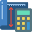
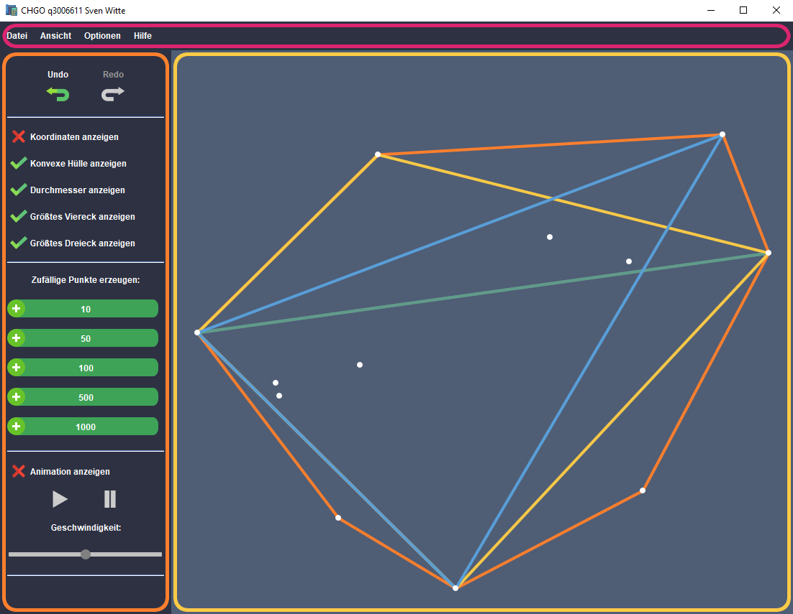
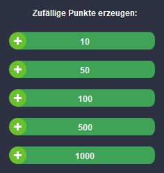
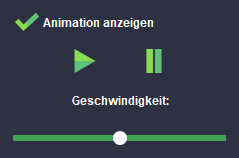

Bedienungsanleitung 
convex-hull-java sv-wit
-
1. Übersicht
- 1.1. Allgemeines
- 1.2. Aufbau
-
2. Menü
- 2.1. Datei
- 2.2. Ansicht
- 2.3. Optionen
- 2.4. Hilfe
-
3. Seitenleiste
- 3.1. Undo/Redo
- 3.2. Anzeigeoptionen
- 3.3. Zufällige Punkte
- 3.4. Animation
-
4. Zeichenfläche
- 4.1. Allgemeines
- 4.2. Steuerung
1. Übersicht
1.1. Allgemeines
Dieses Programm dient der Anzeige einer Punktmenge, sowie der Berechnung der konvexen Hüllen aus dieser.
Zusätzlich können die folgenden Eigenschaften der konvexen Hülle angezeigt werden:
- Der Durchmesser
- Das größte enthaltene Viereck
- Das größte enthaltene Dreieck
Da es sich bei der dargestellten Punktmenge um eine Menge im mathematischen Sinne handelt, ist es nicht möglich, das zwei Punkte dieselben Koordinaten besitzen. Sollte eine Datei eingelesen werden, die mehrere identische Punkte besitzt, wird nur einer dieser Punkte in die Punktmenge aufgenommen.
1.2. Aufbau

Menü:
Im oberen Bereich des Programms befindet sich das Menü.
Die zugehörigen Schaltflächen werden in Abschnitt 2. erläutert.
Seitenleiste:
An der linken Seite des Programms befindet sich die Seitenleiste.
Die zugehörigen Schaltflächen werden in Abschnitt 3. erläutert.
Zeichenfläche:
Im zentralen Bereich des Programms befindet sich die Zeichenfläche.
Die Bedienung der Zeichenfläche findet hauptsächlich über die Maus statt und wird in Abschnitt 4. erläutert.
2. Menü:
2.1. Datei:
Neu:
(Strg+N)
Erstellt eine neue, leere Zeichenfläche.
Öffnen:
(Strg+O)
Öffnet eine Datei, die Punkte enthält.
Speichern:
(Strg+S)
Speichert die aktuellen Punkte in die zuletzt geöffnete oder gespeicherte Datei. Diese Option ist nur verfügbar,
nachdem eine Datei geöffnet oder bereits mittels "Speichern unter.." gespeichert wurde.
Speuchern unter..:
(Strg+Umschalt+S)
Speichert die aktuellen Punkte in die angegebene Datei. Hierbei wird ein Auswahldialog angezeigt, in welchem
der gewünschte Speicherort ausgewählt werden kann.
Beenden: Beendet das Programm.
2.2. Ansicht:
Ansicht zentrieren:
(Strg+V)
Zentriert die aktuellen Punkte so, dass sie mittig auf der Zeichenfläche dargestellt werden.
Mauskoordinaten und Zoomfaktor anzeigen:
Diese Option legt fest, ob die Mauskoordinaten und der Zoomfaktor mittig oben auf der Zeichenfläche angezeigt werden.
Diese Option ist standardmäßig deaktiviert.
Nur Koordinaten des nächstgelegensten Punkts anzeigen:
Wenn diese Option aktiviert ist, werden nur die Koordinaten des nächstgelegensten Punktes angezeigt.
(Siehe 4.2. in Zeichenfläche )
2.3. Optionen:
Umschalt-Taste zum Verschieben von Punkten verwenden:
Diese Option legt fest, ob zum Verschieben eines Punktes die Umschalt-Taste gehalten werden muss.
Diese Option ist standardmäßig aktivier.
2.4. Hilfe:
Bedienungsanleitung:
Öffnet die Bedienungsanleitung.
3. Seitenleiste
3.1. Undo/Redo
Mit der Undo-Schaltfläche können mehrere Schritte bis zum Ursprung rückgängig gemacht werden.
Also bis dorthin, wo noch keine Änderungen vorhanden sind.
Auf einer neuen Zeichenfläche ist der Ursprung zum Beispiel die leere Zeichenfläche.
Neben der Undo-Schaltfläche gibt es auch noch die Redo-Schaltfläche. Wenn zum Beispiel eine Aktion durch die Undo-Schaltfläche rückgängig gemacht wurde,
ist es möglich, diese Aktion wieder zurück zu holen.
Aktionen die mittels der Undo- und Redo-Schaltfläche beeinflust werden können sind die folgenden:
- Das Erstellen eines Punktes.
- Das Löschen eines Punktes.
- Das Verschieben eines Punktes.
- Das Erzeugen von zufälligen Punkten.
3.2. Anzeigeoptionen
Koordinaten anzeigen:
Zeigt die Koordinaten der einzelnen Punkte aus der Punktmenge an.
Konvexe Hülle anzeigen:
Zeigt die Konvexe Hülle der Punktmenge an.
Durchmesser anzeigen:
Zeigt den Durchmesser der konvexen Hülle an. Es ist nicht nötig, dass hierfür auch die konvexe Hülle angezeigt wird.
Größtes Viereck anzeigen:
Zeigt das größte enthaltene Viereck innerhalb der konvexen Hülle an. Es ist nicht nötig, dass hierfür auch die konvexe Hülle angezeigt wird.
Größtes Dreieck anzeigen:
Zeigt das größte enthaltene Dreieck innerhalb der konvexen Hülle an. Es ist nicht nötig, dass hierfür auch die konvexe Hülle angezeigt wird.
3.3. Zufällige Punkte
Mithilfe dieser Schaltflächen kann eine feste Anzahl an zufällig generierten Punkten der bestehenden Punktmenge hinzugefügt werden. Diese Punkte werden an zufälligen Koordinaten innerhalb des Sichtbereichs generiert.
3.4. Animation
Animation anzeigen:
Zeigt die Animation der rotierenden Messschieber an und aktiviert die zugehörigen Steuerelemente.
Start- und Stop-Schaltfläche:
Startet beziehungsweise stoppt die Animation.
Geschwindigkeit:
Legt die Animationsgeschwindigkeit fest, mit welcher die rotierenden Messschieber um die konvexe Hülle rotieren.
In dem Fall, dass sich die Punktmenge ändert, während die Animation aktiv ist, wird die Animation in ihren Ausgangszustand zurückgesetzt.
4. Zeichenfläche
4.2. Allgemeines
Nächstgelegenster Punkt:
Der Punkt, der am nächsten zu der Maus ist, wird farblich durch eine Pinke Umrandung hervorgehoben.
Ein Löschen oder Verschieben wird immer auf den nächstgelegensten Punkt angewendet.
Konvexe Hülle:
Die konvexe Hülle einer Punktmenge wird farblich als Orange Linie auf der Zeichenfläche dargestellt.
Durchmesser:
Der Durchmesser der konvexen Hülle wird farblich als Grün-cyane Linie auf der Zeichenfläche dargestellt.
Größtes Viereck:
Das größte enthaltene Viereck der konvexen Hülle wird farblich als Gelbe Linie auf der Zeichenfläche dargestellt.
Größtes Dreieck:
Das größte enthaltene Dreieck der konvexen Hülle wird farblich als Hellblaue Linie auf der Zeichenfläche dargestellt.
4.2. Maussteuerung
Linke Maustaste drücken:
Erstellt einen neuen Punkt an der Mausposition, wenn dort noch kein Punkt existiert.
Rechte Maustaste drücken:
Entfernt den nächstgelegensten Punkt.
Linke Maustaste gedrückt halten und die Maus ziehen:
Verschiebt die Ansicht in die gezogene Mausrichtung.
Umschalt-Taste + Linke Maustaste gerdrückt halten und die Maus ziehen:
Verschiebt den nächstgelegensten Punkt an die Mausposition.
In den Optionen lässt sich einstellen, dass das Verschieben eines Punktes auch ohne gedrückte Umschalt-Taste möglich ist.